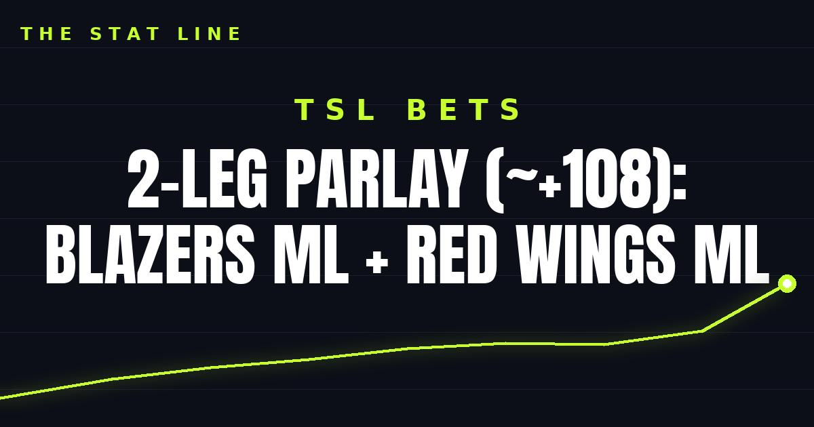

2-Leg Parlay (~+108): Blazers ML + Red Wings ML
Two home favorites, no lottery tickets. Portland on the moneyline and Detroit on the moneyline combine for about +108.

The parlay (2 legs, ~+108)
• Trail Blazers moneyline (-295) — Portland at home against Memphis, the better team in the louder building. Full case for the Blazers here.
• Red Wings moneyline (-180) — Detroit at home against a Chicago team that hasn't earned a point on the road all season. Full case for the Red Wings here.
Combined at those prices: about +108. Two home favorites, no lottery tickets, no ten-leg nonsense. The idea is simple — take the two strongest home spots on the night and let them pay a little better together than they do alone.
The honest caveat: parlays only pay when every leg wins, and -295 favorites lose more often than people like to admit. Odds move through the day — check the book before you bet.
Skipped on purpose
• Pelicans vs. Kings: Two winless teams (both 0-4), and laying points on a team that has not won a game yet is not a quality play. Sacramento is also without Keegan Murray, and New Orleans is without Yves Missi (knee). Pass — somebody has to win, but nobody has to be bet on.
• The rest of the NHL slate: Ten games is a lot of noise; the Red Wings game is the one with a clean home-favorite story. The others stay untouched.
If gambling stops being fun, call 1-800-GAMBLER.